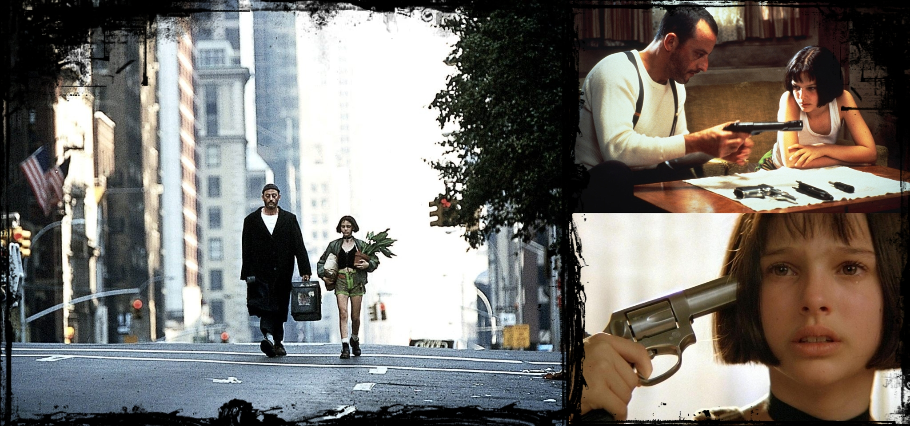

для Epic Skills
возвращение к истокам.
var
day
;
var
month
;
var
year
;
var
day
,
month
,
year
;
day = 10;
month = 07;
year = 2013;
var day = 10,
month = 07,
year = 2013;
var day;
day = 10;
day = "10";
day = "среда.";
day = "третий день от воскресенья!";
day = true;
var year = 2013;
Перенесёмся в будущее.
year + 10; // Результат операции никуда не сохранен!
Сохраняем результат.
var future = year + 10; // future = 2023
var future = 2023;
Здесь всё понятно, полетели дальше.
var far_future = Future + 10;
Результат операции - ошибка!
Назвался с маленькой буквы, носи такое имя.
var far_future = future + 10;
Каждая фраза имеет логическое завершение - ;
Фразы располагаются друг под другом.
var time = "15:30";
var is_rainy = false;
Обдумывай каждое название
var symbols = "a bc defgh ijk lmnopqrst uvwxy z";
var symbols = ["a", "bc", "defgh", ...];
var alt_str = "a bc defgh ijk lmnopqrst uvwxy z";
var alt_arr = ["a", "bc", "defgh", ...];
Дай шанс быть узнанной:
var nav = $("#main nav"); // Что представляет nav?
var $footer = $("#main footer");
Забронированные или служеюные имена:
do if in for let new try var case else enum eval false null this true void with break catch class const super throw while yield delete export import public return static switch typeof default extends finally package private continue debugger function arguments interface protected implements instanceof
Однострочный комментарий:
// Вылет назначен на вечер пятницы.
Многострочный комментарий:
/* Вылет назначен на вечер пятницы. На девять вечера. Боинг 747. */
alertconsole.logtry {..} catch () {..}Вызываем функцию: alert ("Show me!");
$ -> $("h2")$(document).ready -> $(document).ready(..)$("h1").remove -> $("h1").remove()$("h1").css -> $("h1").css("opacity", .5)
function SayMyName () {
// Частная собственность!
}
При обращении к имени SayMyName, будет выведено:
function SayMyName () {...}
function SayMyName (name) {
var str = name;
str = "Hello" + name + "!";
alert (str); // Вызываем функцию внутри другой функции
}
function MorningInstructions () {
// место для работы
}
function Instructions() {
getUp();
doExercise();
cleanTeeth();
makeCoffee();
dressUp();
makeASmile();
}
function Instructions() {
getUp();
doExercise();
makeCoffee();
makeASmile();
cleanTeeth();
dressUp();
}
function Instructions() {
getUp();
makeASmile();
doExercise();
makeCoffee();
cleanTeeth();
dressUp();
}
function Instructions() {
goToWorkUp();
makeCoffee();
makeCoffee();
makeCoffee();
makeCoffee();
}
Условие: var do_you_want_love = true;
if (do_you_want_love) {
take_some_love();
}
Условие может истиной или ложью!
function LoveController (make_love) {
if (make_love) {
take_some_love();
}
}
Используем: LoveController(true);
Условие: var can_you_play = false;
Условие: var wanna_learn = true;
if (can_you_play) {
lets_play();
} else if (wanna_learn) {
take_a_lesson();
} else {
go_home();
}
Возможность повторять однотипные действия:
for(var i = 0; i < 100; i++) {
...
}
В обратном порядке:
for(var i = 100; i > 0; i--) {
...
}
.each(); // Да, это тоже функция!
Используем для коллекции:
$("h2").each(function (..) {..});
Количство элементов в коллекции == количеству вызовов.
function (i, e) { .. }
i - индекс, e - элемент
"цветок", "черный дипломат", "очки", "плащ"
"леон", "матильда", "стетфилд", "фикус"
1, 2, 3, 4
Всё это напоминает очередь
Так и есть!
Беспорядочный список:
"цветок", "черный дипломат", "очки", "плащ"
Упорядочный список:
"подъём", "упражнения на пресс", "в магазин за молоком", "завтрак"
Совершенно не важно!
Окаймляем в скобки:
["подъём", "упражнения на пресс", "в магазин за молоком", "завтрак"];
Записываем в переменную:
var morning = ["подъём", "упражнения на пресс", "в магазин за молоком", "завтрак"];
Утренний распорядок:
var morning = ["подъём", "упражнения на пресс", "в магазин за молоком", "завтрак"];
morning[0] // -> "подъём"
morning[1] // -> "упражнения на пресс"
morning[2] // -> "в магазин за молоком"
morning[3] // -> "завтрак"
function LearningEnglish () {
var i_am_saying;
i_am_saying = "Dream it.";
i_am_saying = i_am_saying + " Wish it.";
i_am_saying = i_am_saying + " Do it.";
alert(i_am_saying);
}
LearningEnglish ()
var i_am_saying;
i_am_saying = "Dream it.";
i_am_saying = i_am_saying + " Wish it.";
i_am_saying = i_am_saying + " Do it.";
alert(i_am_saying);
function what() { alert("what"); }
function is() { alert("is"); }
function your() { alert("your"); }
function name() { alert("name"); }
function question() { alert("?"); }
function Leon() { alert("Leon"); }
function woohoo() { alert("!"); }
what();
is();
your();
name();
question();
// What is your name?
my();
name();
is();
Leon();
woohoo();
// My name is Leon!
Приготовься:
function makeAShot () {
alert("испорчена еще одна рубашка!");
}
Дождись момента между ударами сердца:
setTimeout(makeAShot, 5000);
тренний распорядок:
function morning () {
alert("купить и выпить стакан молока!");
}
Каждое утро:
setInterval(makeAShot, 5000);